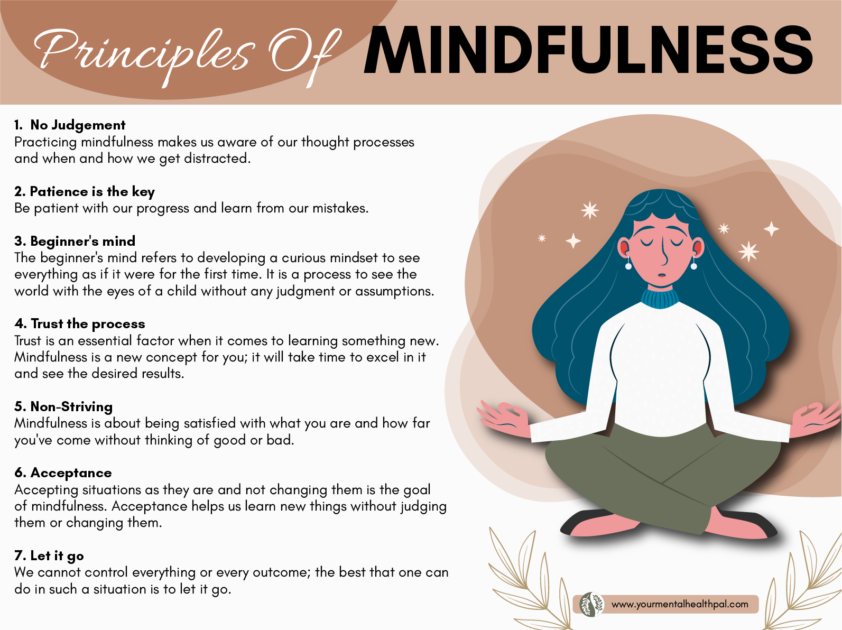

Mindfulness
Learn techniques for cultivating mindfulness, reducing stress, and finding inner peace in your daily life.

Mindfulness is the practice of being fully present and aware of the present moment without judgment. It involves paying attention to your thoughts, feelings, bodily sensations, and the environment around you. Here are some key aspects of mindfulness:
- Breathing and Body Awareness: Focus on your breath and bring your attention to the sensations in your body to anchor yourself in the present moment.
- Meditation and Mindful Exercises: Engage in meditation practices such as focused breathing, body scans, or loving-kindness meditation to cultivate mindfulness.
- Non-Judgmental Observation: Observe your thoughts, emotions, and sensations without labeling them as good or bad. Allow them to arise and pass without attachment.
- Gratitude and Appreciation: Cultivate a sense of gratitude by intentionally noticing and appreciating the simple joys and blessings in your life.
- Engaging the Senses: Pay attention to the sensory experiences of the present moment, such as the taste of food, the feel of nature, or the sounds around you.
Practicing mindfulness can bring numerous benefits, including reduced stress, improved focus, enhanced self-awareness, and a greater sense of calm and well-being. Incorporate mindfulness into your daily life and experience the transformative power of living in the present moment.